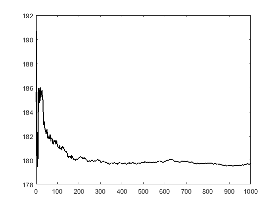
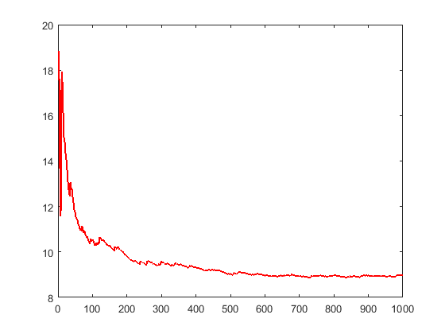
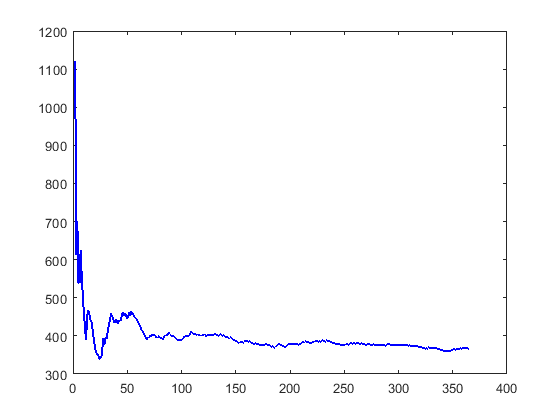
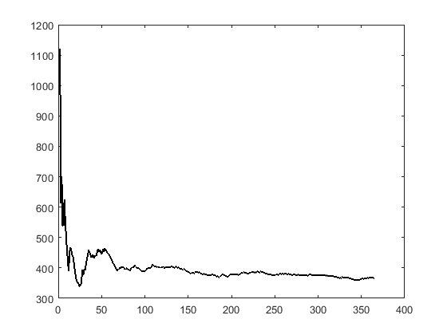
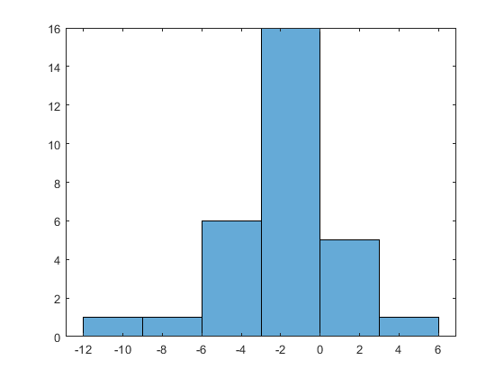
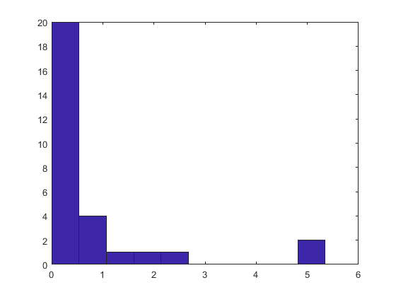

Contents
zadanie M
stderr
[L, R]
zadanie N
zadanie O.2 - statystyka t
zadanie O.2 - statystyka chi-kwadrat
zadanie M

stderr

[L, R]

zadanie N

zadanie O.2 - statystyka t

zadanie O.2 - statystyka chi-kwadrat

Published with MATLAB® R2018a